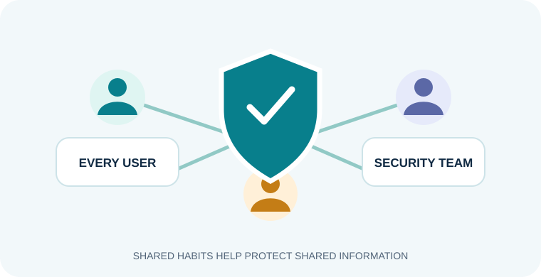

Every user
Use secure sign-in practices, keep devices updated, recognise suspicious messages and report concerns through trusted channels.
PAGE 06 · DIGITAL WORKPLACE COMMUNITY
Everyone who uses workplace technology has a part in protecting information and supporting one another online.
Use secure sign-in practices, keep devices updated, recognise suspicious messages and report concerns through trusted channels.
Share information carefully, follow workplace procedures and make sure access matches each person's responsibilities.
Help protect systems, investigate alerts, guide incident response and support recovery when technology is disrupted.

| Group member | Topic | Website |
|---|---|---|
| Lee Jia En | Cybersecurity | Visit Website |
| Damien | Linux & Its Distros | Visit Website |
| Zhafar | Cloud Computing | Visit Website |
| Thanam | Artificial Intelligence | Visit Website |
| Ilhan Rayyan | Green Computing | Visit Website |
DIGITAL WORKPLACE READINESS PORTAL
Cybersecurity connects with the other technologies people use to learn and work.